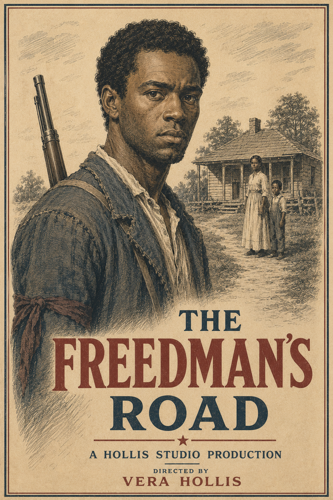
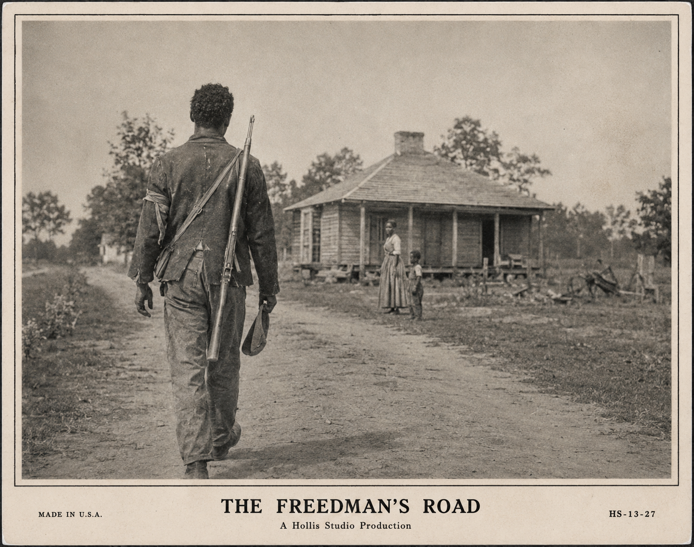
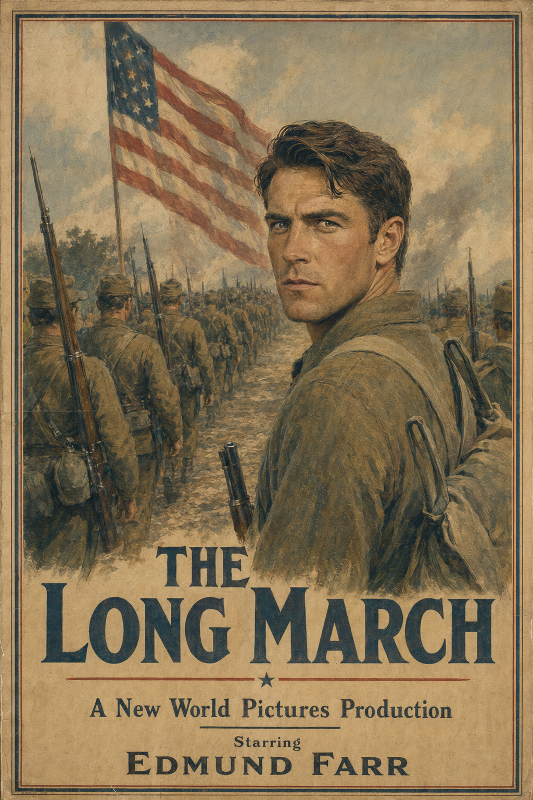
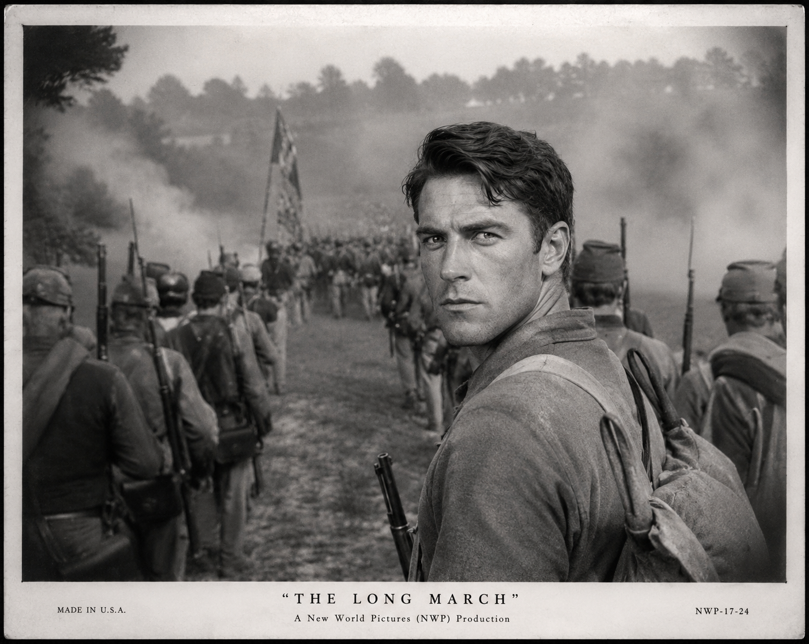
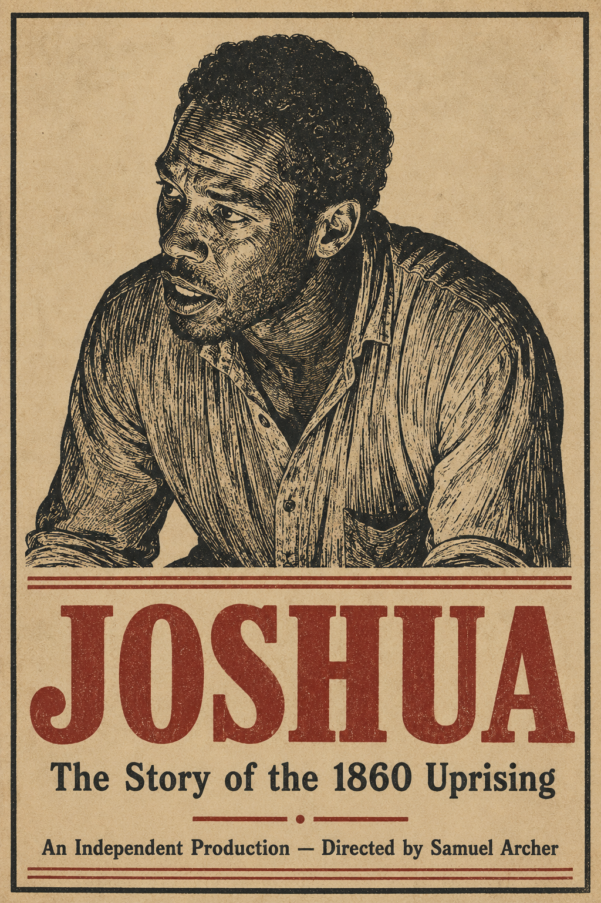
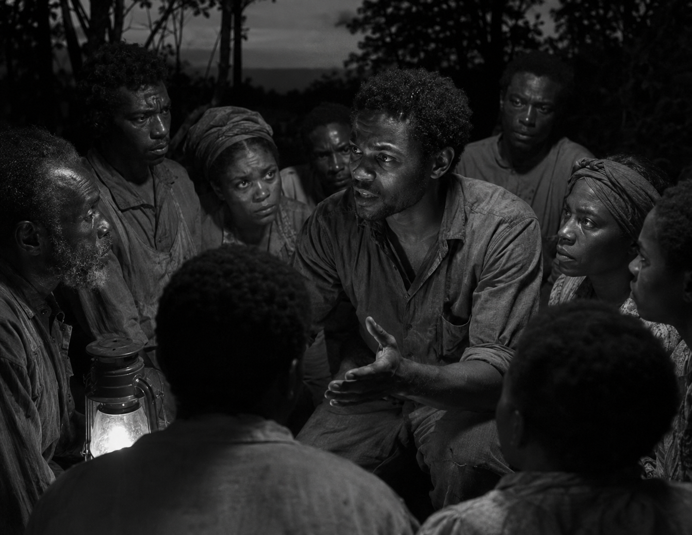
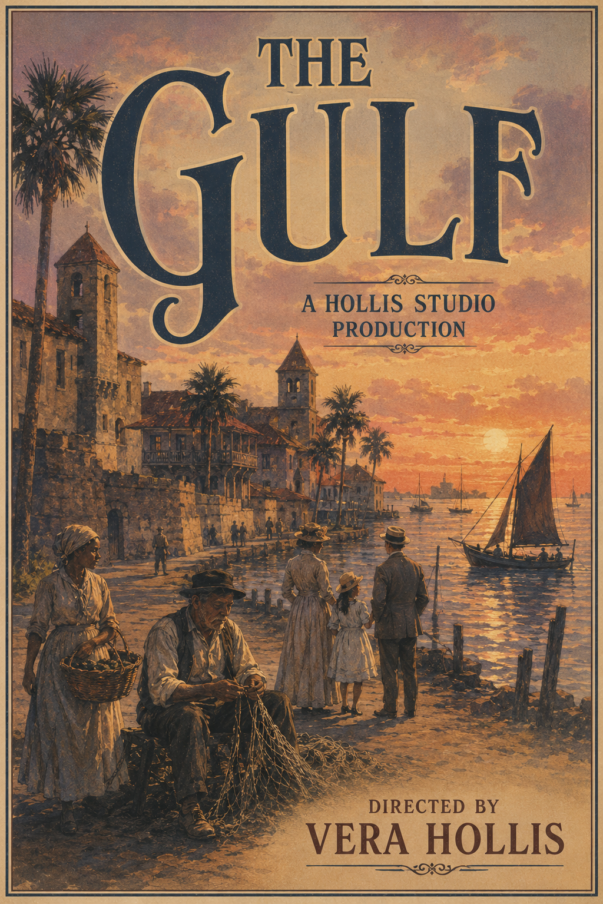
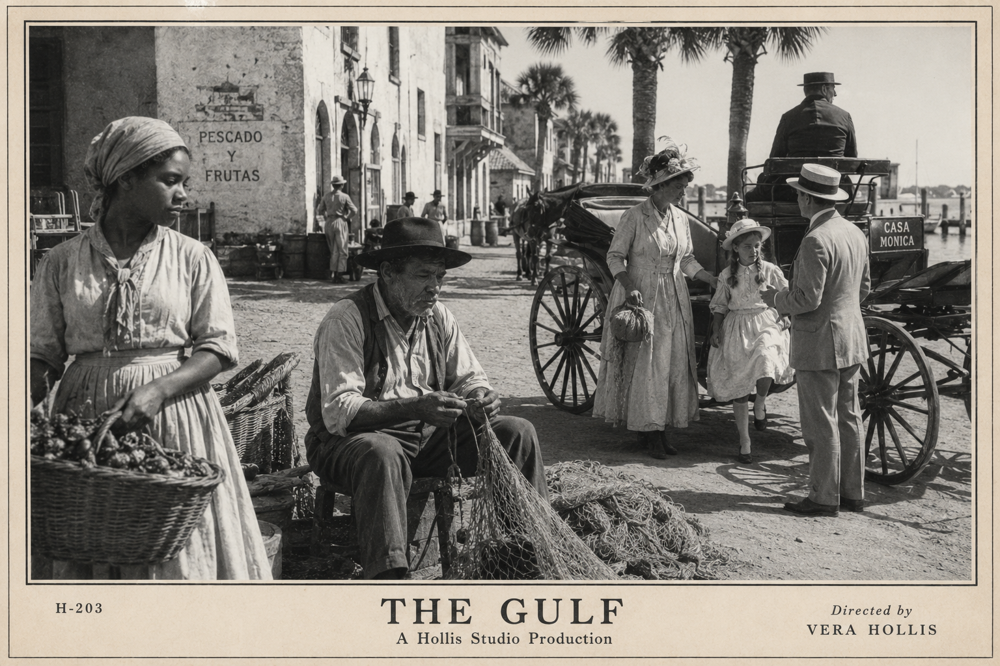

The American film industry is centered in St. Augustine, Florida. The industry migrated from Brooklyn, New York to St. Augustine between approximately 1912 and 1915, led by Vera Hollis and followed by other early filmmakers drawn by the Florida climate, light, and the stable post-Coastal Rebellion federal presence in the region. The industry being based in St. Augustine does not determine where films are set — productions are made and set everywhere, just as OTL's California-based industry made films set worldwide.
Home to all major American studios. Industry arrived ~1912–1915 from Brooklyn.
The Californian film industry. Technically a separate national industry, but with substantial cross-border talent flow.
Primary European cinema hub. Coopted for Prussian propaganda during the Global War; some filmmakers fled to St. Augustine ~1934–37. Rebuilds under the German Republic post-1938 with complicated legacies. Prussia never rises to Nazi-level evil — Frankfurt directors who made propaganda carry complicated, not automatic condemnation.
Secondary European center with operatic and theatrical roots. Italy entered the Global War on the Allied side (~1935); Neapolitan cinema emerges from the war intact and energized.
The industry's primary professional organization. Administers the Benji Awards (est. ~1927–1929). Historically administered the Brennerman Code; in 1964 voted to replace it with the ACS Rating System.
WBT's Oscar equivalent. First awarded ~1927–1929. Annual ceremony. The most prestigious recognition in American cinema. Name origin TBD.
Jubilee Theater — NWP's St. Augustine flagship. San Marcos Theater — Helios Pictures' premiere venue; site of the American Boys premiere (October 1962).
The St. Augustine industry exists in a state with a complicated racial history — Florida was a slave state, ratified the new constitution late (1869), and saw significant Coastal Rebellion sympathizer activity in 1905. The industry's arrival in 1912–1915 plants a cosmopolitan, Northern-inflected culture in a region still processing these recent events.
Integration in the industry is real but uneven. Black creative participation exists from the earliest feature era in ways unthinkable in OTL's California industry — but the environment carries genuine social tension. There is no separate "race film" industry — Black Americans have had full civic participation since 1861. Black creative figures navigate the mainstream industry's constraints, working within the studio system, around its edges, and occasionally outside it entirely. The Freeman presidency (~1941–47) marks the first major opening; Nolan/Priest (~1947–59) narrows it again; the Lincoln era (~1959–65) produces the most significant Black creative work in the industry's history to that point.
Protect the bottom line. Patriotic epics, safe commercial fare, nothing that invites scrutiny. Not enthusiastic collaborators — just commercially cautious.
Prestige ambitions pull toward serious material; commercial interests counsel caution. The tension eventually resolves in American Boys (1962).
Keeps making morally complex, psychologically serious work. David Sterne's films encode what the era won't permit stated directly.
The founding legacy gives them an identity to protect. Shelters Leon Dupree's career. Benji nominations their films receive are often the ACS's institutional conscience asserting itself quietly.
The Brennerman Code — formally FBA General Order 39 — is the broadcast and cinema decency standard that governed American media from 1926 through 1964. Named for Walter Brennerman, Deputy Director of the Federal Broadcasting Authority, it originated as a regulatory response to a 1924 radio profanity incident and was voluntarily adopted by the ACS for cinema in 1927. It is the single most significant institutional force shaping American cinema's content for nearly four decades.
The original FBA General Order 39 list, extended for cinema. Novel non-enumerated words fall outside the Code's reach — the "frick" ruling established this permanently.
Explicit depictions prohibited outright. Suggestive content regulated by degree and context. Sound's arrival in 1925 intensified enforcement debates — dialogue harder to regulate than images.
Never explicitly named in the 1927 cinema Code — covered under broader prohibition on "sexual deviancy" and "immoral conduct." Application consistent and industry-understood without being written down. American Boys (1962) is the direct challenge.
Never explicitly mentioned in the Code. An unwritten rule enforced through commercial logic and informal industry pressure. Enforces itself through Southern distribution network economics. Quietly stops being enforced as the postwar era loosens things and SBC's leverage wanes after ABN's absorption of SBC (late 1940s/early 1950s).
Criminal methods cannot be depicted approvingly. Violence regulated by degree.
The FBA's jurisdiction was over decency, not politics. The ACS carefully kept that door closed when adopting the Code for cinema.
Adopted by the ACS in 1964 to replace the Brennerman Code. A four-tier audience designation system — audience guidance rather than content prohibition. Designed in the specific context of American Boys's distribution controversy: the goal was a system that informed audiences rather than gatekept content.
A thirty-minute narrative film following a Black veteran of the War Between the States returning home to Mississippi. Directed by Vera Hollis. Distributed nationally; played in Black community halls where cinema halls would not show it. Established Hollis's reputation as a filmmaker willing to take on serious racial material.


A War Between the States epic following a Free State regiment from enlistment through the fall of Atlanta. The first film to feel genuinely cinematic in the modern sense — real location photography, crowd scenes, emotional scope. Made Edmund Farr a nationally known name. Established the historical epic as the American prestige genre.


A feature-length account of Joshua Black's 1860 Mississippi slave uprising. Directed and independently produced by Samuel Archer, financed through Black investors and Freedmen's community organizations. Predominantly Black cast and crew. Distributed entirely outside the studio system — played in churches, lodge halls, and community organizations nationwide. One of the most studied films in WBT cinema history. The 1958 color sound remake (Commander Black, Hollis Studio, dir. James Odom) brings the story to mainstream audiences four decades later.


Vera Hollis's late-career masterpiece and final major directorial work. A melodrama set in St. Augustine following three families — one white Northern transplant, one Black, one old Florida Spanish-descended — whose lives intersect over a single summer. Shot entirely on location. The most visually distinctive American film of the silent era. Hollis retired from directing shortly after its completion.


Synchronized sound arrives in American cinema ~1925 — earlier than OTL, driven by the maturity of Gideon Macon's audiography infrastructure. The transition is faster than OTL's: mixed silent/sound production lasts roughly three years rather than five or six. Silent features are effectively finished as a commercial proposition by ~1928–29. The early talkies are technically better on average than OTL's — the audiography tradition means recording is more sophisticated from the start. Sound's arrival intensifies Brennerman Code enforcement debates — dialogue harder to regulate than images.
NWP's first commercially successful talkie — a pioneer story set in the 1850s Oregon Country. Edmund Farr leads. The film's final scene — a long static shot of the Oregon coast at sunset, no dialogue, just wind and waves on the soundtrack — became one of the most celebrated moments in early sound cinema: showing what sound adds, not just what it requires.
Marguerite Thibodaux's breakthrough film. A melodrama set in New Orleans during the Caribbean War period. Thibodaux's voice and screen presence are the whole film. One of the first Benji winners for Best Performance by an Actress. Established New Orleans as a setting the industry returns to repeatedly.
The first major sound-era war film — a dramatization of the Caribbean War's naval campaign. Less interested in heroism than in the machinery and cost of modern warfare. Modest box office; later reassessed as ahead of its time. Establishes US Studios as the home of the intelligent, morally serious war film.
The Global War's effect on Frankfurt cinema — Prussian government cooption for propaganda, with some filmmakers fleeing — produced a small exile community in St. Augustine beginning ~1934–1937. Perhaps eight to twelve significant figures. Their influence shows up most clearly in the postwar era. The Frankfurt tradition — technical precision, formal rigor, optical physics-influenced compositional seriousness — cross-pollinates with the American industry's commercial instincts to produce some of the most distinctive postwar American work.
St. Augustine is geographically remote from any theater of conflict — production continues throughout the war. American cinema during the Global War is prosperous. The USA enters the European theater in 1934, the Pacific theater in 1935 under President Leon Palmer. The War Department establishes an informal consultative relationship with the major studios — commercially motivated patriotic content without requiring formal mandates. Parker Studios produces home-front material while keeping core characters out of direct combat depictions.
The first animated feature film. Lauretta Parker had been developing it for years before the war began — release coinciding with the war's outbreak was circumstance, not calculation. The highest-grossing film of 1932 by a significant margin. Establishes Parker Studios as a major creative force.
A pre-entry espionage thriller — an American operative in Prussia uncovering military intelligence. Tense, morally grayer than later wartime productions will allow. Establishes US Studios as the home of the intelligent thriller.
The Global War era's defining dramatic film, and the breakout for both William Cord and Helios Pictures. Private Marsh — a natural leader who looks out for the underdog — carries his unit through training and deployment before an act of extraordinary courage apparently costs him his life. The mourning scene in which his unit remembers him gives the film its title its full weight — then Marsh walks in: injured, battered, alive. The unexpected survival reframes everything. Character-driven, personal, prestige without feeling propagandistic.
The beloved wartime Brent Bunny short. Brent drafted — comedic basic training — never shipped overseas, never seen in combat. Ends with Brent in uniform waving goodbye at a train station, Barbara waving back. Played for laughs; lands somewhere unexpectedly tender. One of the most beloved pieces of wartime popular culture. Adults cry at the ending despite themselves.
Edmund Farr's final film, released posthumously — he died early 1938 during post-production. A Caribbean War naval epic. Spain signs its Global War armistice mid-1938, meaning a film about America's last war with Spain arrives as Spain is formally defeated again. The dedication card for Farr, the Spanish armistice, and the European armistice all arrive in the same cultural moment.
A home front drama following a family with sons overseas. Marguerite Thibodaux in her mature career peak. Quieter and more domestic than the era's typical war films. The film people associate with the emotional truth of the home front years.
The Global War ends in stages — European armistice autumn 1938, Asian ceasefire late 1940, final settlement 1941 under Freeman. Color arrives as the dominant format just as this era opens — Moses (1942) is the breakthrough, and by 1950 black-and-white is largely an artistic choice. Telecinema arrives as a mass-market technology in the late 1940s; the industry responds with widescreen formats and event films.
Freeman's presidency is a cultural signal. A Black president presiding over postwar reconstruction creates a different commercial calculus for Black-led stories. Black directors get more access; Black actors start getting leading roles in mainstream studio productions.
The first color feature film. A Biblical epic. NWP's choice of a grand subject for the technology is deliberate — the lush landscapes in full color are the point as much as the story. Stars Oscar Reynolds. Multiple Benji wins. Establishes color as the prestige format almost immediately.
Parker Studios' first color animated feature — arriving a year after Moses, Parker moving quickly to stake her claim in the color era.
The veterans' cinema landmark. Not a war film — the war is mostly past tense. Follows three veterans of the European and Pacific theaters returning to a small Ohio River town and struggling to reintegrate. Quiet, character-driven, psychologically honest. The Frankfurt exile aesthetic visible in its tight compositions and psychological interiority.
William Cord's postwar romantic peak — a glossy, beautifully photographed romantic drama making full expressive use of color in a non-epic context. Cord opposite Vivienne Marsh in their first major pairing. Commercially enormous, extraordinarily well-crafted. The kind of film the industry makes when it's prosperous and confident.
The most politically significant film of the Freeman era. A drama about a Black attorney in the post-War Between the States South fighting a wrongful conviction case. Directed by Leon Dupree — his breakthrough. The first major studio film with a Black director and predominantly Black cast to receive genuine mainstream distribution and serious Benji consideration. Doesn't win — the industry isn't ready — but the nominations are a cultural event.
"America first, America always." Hard right JCA, McCarthyism-adjacent social conservatism. The mechanisms of pressure on the industry are indirect: friendly congressmen making speeches about "un-American content," the Morality League finding its second wind, FBA license renewal processes becoming slightly more fraught. Nobody is formally telling studios what to make. They don't have to. The Brennerman Code gets institutional reinforcement — ACS tightens seal standards in 1948–49. The homophilia community goes back underground. Leon Dupree's career hits its first serious wall. The Nolan years produce some of the most formally sophisticated American cinema of the century precisely because the best filmmakers are working against constraint. David Sterne's oblique method is forged in this era.
The archetypal Nolan-era accommodationist film. A sweeping American Revolution epic — safe historical subject, unambiguous heroism, gorgeous color cinematography. Technically NWP's most accomplished production to date. Enormously commercially successful. The film Hollis Studio's people watch and feel vaguely sick about, because it's genuinely well made and they resent having to admit it.
The resistance's answer — though it would never call itself that. A psychological thriller following a river boat captain who discovers his first mate has been falsely accused and must decide whether to speak up at personal cost. The allegory for the Nolan era's climate of accusation and silence is impossible to miss for anyone looking, completely deniable for anyone who isn't. Otto Veil screenplay. The ACS membership using the Benji for Best Screenplay as a quiet form of institutional conscience.
Helios caught in the middle — a lush romantic epic set in the Caribbean in the 1950s, with Cord and Marsh in their third and most commercially successful pairing; their screen chemistry at its peak. The film Helios makes to keep the lights on while figuring out what they actually want to say.
Leon Dupree's Nolan-era statement. A crime drama — genre cover — set in a Southern city, following a Black detective navigating a corrupt police department. Else Kaufmann cinematography. The Brennerman Code has nothing to formally object to — it's a crime drama, the detective is the hero, the law ultimately prevails. But the texture of institutional racism and the psychological cost are all there. Modest mainstream distribution; significant word-of-mouth in Black communities. Later reassessed as one of the masterworks of the era.
The Nolan climate with the temperature turned up — and then, at the very end, a window cracking open. The Brennerman Code's cultural authority peaks and then starts visibly fracturing. The Lincoln election is on the horizon as Priest's term ends. Two new cultural forces arrive simultaneously: science fiction as a mainstream genre (the fission program's anxiety expressed at a safe generic distance) and a growing younger audience sensing the gap between what films are allowed to say and what they want to hear. The War Between the States centennial (~1956–1960) generates four major productions landing at exactly the moment the political climate is shifting.
The era's big commercial war epic — set in the Global War's European theater. James Corbin leads as a composite officer: heroic, uncomplicated. Enormous box office. The film nobody remembers much about except that it made a great deal of money.
The science fiction genre's arrival as a mainstream commercial proposition. A near-future story about the first human expedition to establish a permanent Moon research station — the fission era's technological confidence expressed as adventure rather than anxiety. Technically inventive; zero-gravity production approaches become industry standard. Commercially successful enough to establish sci-fi as viable for major studio production.
David Sterne's oblique homophilia film. Two scientists at an isolated research installation develop a profound bond while working on a classified project; discovered by institutional authorities, they face the destruction of everything they've built. Surface reading: a meditation on scientific ethics and the cost of independent thought in a conformist age. Underneath: completely transparent to anyone who wants to see it. The Brennerman Code has nothing to formally object to. The Morality League protests anyway. Jesse Pike sees it three times. Modest mainstream distribution; extraordinary word-of-mouth in specific communities. Later recognized as one of the great American films of the century.
Ida Welles's breakthrough into serious material. A melodrama set in New Orleans following a woman navigating the dissolution of her marriage and the discovery of her own independence. Marguerite Thibodaux in a supporting role — the passing of the torch from one generation of female screen presence to another made explicit in the casting. Welles carries it entirely.
The War Between the States centennial generates four major films from four different angles. WBT framing: The anti-slavery northern states seceded (Confederation of American States, New England-based); the slaveholding states stayed in the Union under Hawthorne. The Free States (non-New England Northern states) broke with Hawthorne without joining the Confederation. The allied Free States, Confederation, and British defeated the Union. Joshua Black led the pivotal 1860 Mississippi slave uprising. The war ended October 1860 with Hawthorne's surrender in Atlanta.
The big commercial centennial epic. Follows the Free Army of the West's campaign from the liberation of Franklin through the fall of Atlanta. Sweeping, expensive, technically spectacular. James Corbin leads as a composite Free State officer — heroic, uncomplicated. The film everyone sees and few remember with specificity a decade later.
James Odom's defining work — a color sound biopic of Joshua Black from his years as a house slave through the founding of the Republic of New Africa and the July 4th emancipation. Odom's direction is classically dramatic — big scenes given full emotional weight, Black depicted as a genuine political and military mind. Edmund Ward's lead performance is the talk of the industry. Strong mainstream distribution. Multiple Benji nominations including Best Film and Best Director for Odom (first such nomination for a Black director) and Best Performance for Ward. Neither wins — the nominations alone land like a cultural event.
David Sterne's centennial film — the six weeks of congressional horse-trading behind the Negro Emancipation Act's passage. Follows a fictional Democratic congressman from Ohio who privately supports emancipation but has made "quiet assurances" to his constituents he won't support racial equality. Lives entirely in the gap between public positions and private convictions. Otto Veil screenplay. The film that makes everyone in the industry feel slightly implicated.
Leon Dupree's reconstruction ensemble — set in New Orleans, 1861–1863. Five characters: a newly elected Black state legislator, his wife managing a freedmen's school, a white Free State officer discovering the gap between the war's ideals and its aftermath, a former slave owner's widow adapting to a changed world, and a former member of Joshua Black's army trying to find civilian footing. No single protagonist. Thibodaux in a supporting role. Else Kaufmann cinematography. Dupree working at full capacity for the first time in years. Benji nominations for Dupree, Kaufmann, and Thibodaux.
Lincoln's election doesn't immediately change what films get made — production timelines don't work that fast. But it changes what gets greenlit, what scripts get dusted off from development purgatory, what conversations happen in offices that previously happened in whispers. By 1960 the content is shifting. The Brennerman Code's enforcement weakens without formally changing. The ACS membership starts approving films that would have been sent back for cuts two years earlier. In 1961 a Castillo thriller distributed without the seal performs well, proving the seal's commercial non-necessity. Then American Boys (October 1962) kills the Code entirely. The 1964 ACS Rating System vote cleans up what American Boys already decided.
Hawthorneland (1963) launches the speculative history genre — never top-tier but persistently popular, like OTL's disaster film genre. A reliable mid-tier that never fully goes away.
Set in Calumet — the NAU's cosmopolitan hub. A woman in her late twenties navigating the end of one relationship and the beginning of another over a single summer. Maria Eisen's introduction to serious cinema — classical glamour at a studio known for social conscience. Benjamin LeCroy opposite her in his last major straight romantic lead before American Boys reframes everything. In retrospect the film acquires a complicated quality: audiences rewatching it after October 1962, watching LeCroy with that knowledge.
Two soldiers — Thomas Gallant (Benjamin LeCroy) and Peter Strand (Scott Bell) — fall in love in the European theater of the Global War. Gallant had been suppressing his nature his entire life; Strand had been quietly at peace with his. When the war ends, Gallant panics — returns home to his fiancée Clara (Ida Welles) and tries to rebuild a normal life. He is miserable. Clara senses something is wrong but cannot locate it. Eventually he breaks down, leaves Clara — the scene between them the film's emotional core, Welles doing devastating work — and goes to find Strand, now living in Calumet. Their reunion at Calumet's Union Station is the final scene: Strand on the platform, Gallant coming through the crowd. No dialogue. Train station noise dropping away on the soundtrack. The beginning of their happily ever after rendered as something almost unbearably ordinary and complete.
The ACS demands significant edits — the ending, physical tenderness in the war sequences, dialogue that names the relationship explicitly. Helios refuses. Distributes without the seal. The Morality League organizes protests in seventeen cities. The film is a hit. The Code does not recover.
Premiere at the San Marcos Theater, St. Augustine. Jesse Pike attends; calls it "the most honest thing American cinema has ever made." LeCroy arrives with his boyfriend — years of speculation confirmed in a single front-page image. Bell tells reporters he is proud of the film. Benji nominations denied despite widespread critical acclaim. The snub generates more conversation than a win would have.
The film that launches the speculative history / alternate history genre in American cinema. Premise TBD. The genre has an initial heyday in the late 1960s and early 1970s, then never reaches top-tier permanent prominence but persists — like OTL's disaster film genre. Hawthorneland is the genre's founding document.
Ward defends a man accused of a violent crime. He wins. The doubt about his client's innocence is never stated — Ward carries it entirely in the performance, and the acquittal lands as something other than a triumph. NWP signing Ward and hiring Dupree to direct signals the Lincoln era's changed commercial calculus; the film itself is a contemporary drama with no historical subject and no racial stakes. The statement is entirely in the casting. Multiple Benji wins including Best Film, Best Director for Dupree, and Best Performance for Ward. The night the industry finally says what it should have said about Dupree years earlier.
Set in New Boston — the Pacific Northwest's major city, the NAU's Pacific gateway. A woman choosing between two versions of her life: the stable, conventional path and the uncertain, vital one. Eisen makes the conventional choice feel genuinely tempting rather than obviously wrong — the film's moral intelligence in refusing to make the decision easy. Benji win for Best Performance, Eisen's first. Vivienne Marsh sends flowers to the ceremony — widely reported as genuine.
Cassandra Schultz inherits a country that just had a constitutional moment and wants to be a boring president in the best possible sense. She becomes a war president by circumstance. The Choson War (1966–67) defines her term: a short, costly conflict ending in vindication, with the CDC bombing of Beijing and Shanghai as its defining moral weight. The post-Code cinema landscape opens fully. Cultural visibility of homophilic characters in film grows through the late 1960s — present and human, unthinkable in the Nolan era. The Second Wave is in full swing. Ash and Stars launches on TC (~1968–69) and quickly becomes a cultural institution.
Benjamin LeCroy's post-typecasting vehicle — a serious dramatic film with nothing to do with his personal life. An American journalist in Busan covering postwar reconstruction realizes his most trusted source is feeding information to Chinese hardliners. Suddenly he knows too much. The thriller mechanics come from a civilian operating without his competencies rather than a trained operative. A mainstream commercial hit that normalizes LeCroy as a working dramatic lead. The statement is entirely in the normalcy.
The second Dupree/Ward collaboration. A death brings a father (Ward) and his adult son together. The unresolved thing: a choice the father made that the son has never understood. The funeral is the frame; the reckoning is the film. Ward carries the whole weight without explaining himself — the father knows what he chose and why; the son doesn't; the film ends before the gap fully closes.
Part of the post-Hawthorneland spec history wave. Premise: the Aztec Empire successfully resisted Spanish colonization and survives into the modern era. The strangest and most formally adventurous of the mid-1960s spec history films. Californian co-production given geographic and cultural proximity to the material.
Ruth Calloway's debut feature. A woman returns to her Appalachian hometown after decades away for a funeral, and finds herself reckoning with who she left behind and who she became. No villain, no resolution. Calloway's interior aesthetic announced fully formed: women in private reckonings, the moment before a decision, the cost of a choice already made.
The ground-level Choson War film. A small unit of NAU soldiers in the grinding middle of the conflict before the bombing decision changes everything. Ends before liberation. The war doesn't resolve for these men within the film's frame.
David Sterne's Choson War film — the moral reckoning picture. The bombing decision and its aftermath from a civilian and diplomatic angle. Sterne's oblique method applied to something that cannot be made oblique — the bombing of Beijing and Shanghai is stated clearly, and the film lives in the space between necessity and horror. The most critically significant Choson War film.
The Choson War as experienced from a continent away. Families, TC screens, a senator's office, a protest outside a government building. The war's human cost measured in the people who waited rather than the people who fought.
Postwar renewal, NAU Assembly established, moon landing in the bicentennial year. The post-American Boys generation fully in charge of American cinema. Dupree, Sterne, and Calloway produce some of their most significant work. The homophilia movement is culturally visible and growing — CEA cases moving through courts, Pike in the Senate, the first marriage equality bill failing ~1975–76 but the losing margin close enough to matter. The moon landing in 1976 adds gasoline to the sci-fi genre: optimistic, expansive, adventure replacing the fission era's anxiety.
Mateo Herrera's St. Augustine debut. A Texian-American co-production about the Second Mexican War (~1845–47) — the sinking of the S.S. Bostonian at Galvez Town as the inciting incident, the Battle of San Antonio, the campaign toward the Second Treaty of New Orleans. Bilingual texture, landscape as moral presence, a frontier mythology distinctly different from the American West myth.
The third and final Dupree/Ward collaboration. Ward as a staffer inside a fictional presidential campaign, watching someone he respects make a choice he can't respect. The complicity question left entirely open — he stays, he doesn't blow the whistle, the campaign wins, the film ends. One of the most discussed endings in WBT cinema: not resignation, not corruption, just the quiet continuation of a man living with what he's seen.
Ruth Calloway's second film. A mother and adult daughter — the generational divide as subject rather than backdrop. The distance between the two women real and specific; the film refuses to close it neatly.
Calloway pushing her aesthetic into less familiar territory — a road film, more formally adventurous than her previous work. A woman in motion, landscape as moral presence. Her most structurally experimental film before Abernathy.
The moon landing (1976) energizes the sci-fi genre — optimistic and expansive, the fission era's anxiety replaced by genuine adventure. The Furthest Frontier (1978) launches the major film franchise of the era. The event film and spectacle side of the industry grows more dominant, coexisting with the continuing Second Wave prestige drama tradition. Abernathy (~1978–79) dramatizes the homophilia movement's founding. Together (~1981–82) quietly pushes toward a door not yet legally open. Then Pike wins the presidency (1983) and marriage equality passes — At Last (~1986–87) is the cinema's response, a love story where the ending is finally possible.
The spec history genre's major late-1970s entry — a deliberate wink at the alternate history tradition. Premise: the War Between the States dragged on for a decade without British entry; the 1867 ceasefire broke North America into multiple successor states; a second war followed over western territories; the 1874 peace left a permanently fragmented continent. The film is set during this world's equivalent of the Global War, fought on North American soil with different successor states on different Prussian/UER sides. The most viscerally WBT of all spec history films — imagining the great conflict fought in places audiences know.
The major sci-fi film franchise of the post-moon landing era. Opens optimistically — humanity spreading through the solar system, the GPC evolved into a unified Earth governance body. Political tension builds: Mars colonies chafing against Earth authority. Just as war seems inevitable, aliens arrive. Everything changes. The film later receives the retroactive subtitle First Contact once the franchise establishes itself — similar to Star Wars becoming Star Wars: A New Hope.
NWP's medieval swashbuckler — entertainment through and through. A rags-to-riches knight and a major tournament, with Arthurian magic sprinkled in. Generic medieval European setting. The archetypal late-1970s event film: big, spectacular, justifies leaving the house.
Ruth Calloway's major statement — the dramatization of the Abernathy murder (autumn 1944) and the founding marches. Episcopal priest George Abernathy as the emotional anchor; Jesse Pike as a visible character. An ensemble film: several lives intersecting around the murder and what follows. Calloway's interior aesthetic applied to historical material on a larger canvas. The most significant American film about the homophilia movement's origins.
The second Furthest Frontier film. The alien arrival forces Earth/Mars tension into suspension as humanity scrambles to present a unified front. The aliens are not villains: complicated, unknowable, transformative rather than threatening. As much about humanity's relationship with itself as with the aliens.
The original trilogy's closer, arriving after a time jump from Common Ground. The uneasy first contact has matured into something more formal — a genuine human-alien alliance, with a governing compact that feels vaguely like a unified federation of worlds. The drama comes not from forming the alliance but from living inside it: what it costs, what it demands, and whether the unity forged under existential pressure can survive once that pressure eases. Closes the trilogy on a note of hard-won, imperfect cooperation rather than triumph.
Peter Vane's debut feature. Two women in a contemporary relationship — the marriage equality question present the way a locked door is present, felt without being announced. A second-generation post-American Boys filmmaker treating a homophilic love story as simply a love story. The door the two women press against is real; the film ends before it opens.
Ash and Stars launched on TC ~1968–69 — a serialized fantasy-in-space series following protagonists navigating a galactic empire in decline. A full cultural institution over fifteen years of TC life before the big screen debut arrives. The film expands the scale of the universe without betraying the TC series' intimate character-driven foundation.
The cinema's response to marriage equality — a year or two after the fact. Two men. A proposal and a marriage. The battle is won; this film just gets to be a love story where the ending is now legally possible. Helios producing it is a deliberate bookend to American Boys (1962) — the studio that refused to cut the film that broke the Code now makes the film that celebrates what that refusal eventually became.
The spectacle/event film side of the industry grows more dominant through the late 1980s and early 1990s. A new generation emerges — not called the Third Wave by anyone in it, though critics will use the term retroactively — gravitating toward New Orleans as a satellite production hub. The Gulf Wave is a pushback: against spectacle dominance, against Second Wave emotional restraint, against continental cultural homogenization. Rawer, more immediate, smaller budgets, location-shot, the city as character. Gulf Coast Pictures, founded in New Orleans under the Liu presidency, is its institutional home. Simultaneously, international cinema begins breaking through to mainstream NAU audiences — Japanese and German films finding genuine crossover traction on the prestige circuit.
Japan's major international breakthrough film. Four connected stories across time — pre-modernization Japan, the early republic (~1904–10), the Global War era (~1935–40), and the near-to-medium future — linked by a family heirloom passing through all four periods. Non-linear structure. Philosophically serious, formally precise, distinctly Japanese in its relationship to technology and progress: concerned with what advancement costs rather than what it enables. English release title Across All Time; Japanese title TBD. A prestige circuit sensation that crosses over to mainstream NAU audiences.
The German Republic's major international breakthrough film. A dramatization of the 1938 democratic revolution — the mass protests, the parliamentary collapse, the King's abdication, the republic proclaimed. Arrives just before German reunification with Prussia becomes a live political question; the implicit subtext: what was this revolution for, and is it worth preserving? Follows ordinary people caught in the machinery of those compressed historic weeks. The German film that makes NAU prestige audiences pay serious attention to Frankfurt cinema.
Jules Fontenot's debut feature. Mardi Gras as dramatic pressure rather than backdrop — the city transformed, normal rules suspended, something coming to a head under the surface of the celebration. New Orleans rendered from the inside, with the specificity of someone who grew up in its texture. The Gulf Wave announced: rawer than Second Wave prestige drama, more immediate, the city as a living character rather than a setting.
Jesse Cormac's debut feature. A man from Kanasaw comes to New Orleans; characters from both worlds in conversation; the bridge between them the dramatic engine. Cormac's outsider eye makes both communities strange and specific simultaneously. The Gulf Wave's more formally adventurous voice alongside Fontenot's more rooted one.
Founded in New Orleans under the Liu presidency (~mid-1990s) by Jules Fontenot and Jesse Cormac. Independent, small budget, authentic. Not competing with NWP or Helios on budget — competing on creative freedom and geographic specificity. The institutional home of the Gulf Wave movement.
The 2000s are shaped less by any single defining film than by structural shifts: the optical disc (~1997–98) fully displaces home cassette by ~2003–04; Interlink-based disc rental services emerge ~2005–07 and begin pivoting toward streaming by ~2010. The Mercer-era Mesopotamia withdrawal (2001) and its long, ambiguous aftermath produce a cluster of films in a grittier, more ground-level register — closer to quiet character studies than to the vindication-arc of the Choson War films. The moon landing's optimism has given way to something more uncertain; a western revival, triggered by Long Boom anxieties, looks backward toward an origin story genre. The Furthest Frontier gets its prequel trilogy, mirroring the structure (if not the tone) of franchise prequels elsewhere. The spec history genre produces two of its most ambitious entries yet — one a sprawling alternate-Global-War epic with a twist, the other the genre's most direct meta-engagement with WBT's own point of divergence.
The genre revival NWP needed — "western" in the WBT sense: Oregon Trail-era westward expansion, survival, land, and family rather than gunfights. A multi-generational saga beginning in the 1840s: the bulk of the film follows one family's wagon-train journey toward New Boston, with a time jump to a later generation for the payoff — what was built, and at what cost. Native peoples encountered along the route (outside Kanasaw and Lakota territory, which the route deliberately avoids) are rendered with moral complexity rather than as obstacles or guides — tense, mutual uncertainty rather than conquest. Triggered by Long Boom anxieties and Mesopotamia-era uncertainty: audiences wanting a story about getting through hardship. The genre's first major blockbuster in years.
Three films processing the long, frozen GPC stabilization mission and its end — closer in register to ground-level war films than to the Choson War cluster's "vindication at what cost" framing. No vindication here; the questions are messier and the films sit with that.
A small GPC unit, present near the 1998 Ottoman atrocity inside a GPC-protected zone, unable to stop it. Ground-level, gritty, Gulf Wave-adjacent register — the film that gave the era's defining political wound ("did we fail the people we promised to protect?") its cinematic form. No heroics, no resolution — just the weight of having watched.
The 1999 downing of a Delhi-to-Germany civilian airliner — mistaken by Ottoman forces for a GPC military flight — told through the families of the mixed international passenger manifest. NWP-scale ensemble piece, the most commercially accessible of the cluster. The tragedy of mistaken identity at the center: nobody meant for this to happen, and that doesn't make it less devastating.
The Mercer withdrawal gambit — the public deadline, the summer of nobody believing it, November 7th itself, and the Ottoman about-face. Told from inside the room: an aide or junior diplomat watching the gambit play out in real time, never sure until the last moment whether it will work. Smaller and tenser than a typical political drama — the tension of a bet that could have gone catastrophically wrong.
A structurally novel prequel trilogy. Rather than simply building tension toward the original film's opening, the third installment flips perspective entirely — telling the story from the alien side, ending at the exact moment their ship arrives at the close of First Contact. Audiences who know the original trilogy watch the third prequel with growing recognition of where it's headed.
The founding mission — humanity's first permanent Mars colony, the GPC-evolved Earth government at its most optimistic. Sets up everything the original trilogy takes for granted: how Mars came to be settled, who went, and why. The most purely hopeful film in the franchise.
Mars grows — and a generation born on Mars rather than Earth starts asking what "home" means and who gets to decide their future. The sovereignty/integration tension that defines the original trilogy's opening act gets its origin story here: not villainy on either side, just two reasonable positions hardening into opposition.
The trilogy's structural surprise — an entire film from the alien perspective, following their long journey toward the Sol system. Not villains, not invaders in any simple sense — travelers, with their own internal politics and uncertainties about what they'll find. The film ends at the precise moment their ship arrives at Earth/Mars space — the opening beat of First Contact, now seen from the other side of the airlock.
The spec history genre's most ambitious entry yet — an alien invasion during the Global War (~1932–40), launching a new franchise. The title plays on WBT's own avoidance of the term "World War" (they call it the Global War) — within this fictional alternate, "Worlds at War" is the name people actually use, a quiet wink for WBT audiences. Cold Front, the launch film's subtitle, points at the invading species' defining trait — soft canon for now, but the concept on the table is aliens who thrive in cold/wet conditions and struggle with heat, inverting the familiar "aliens vulnerable to Earth's extremes" trope. This reshapes the alternate Global War's geography: the invaders dominant in northern theaters, weaker in the tropics — giving the human-alien conflict a strategic axis the real Global War never had.
The genre's most direct engagement yet with WBT's own point of divergence — and its inverse. Premise: the War of 1812 resolves as it did in our own world, Washington is never burned, and the capital remains where it has always been. By 1861, the resulting nation — recognizably close to but not identical with our own world — finds itself dividing over slavery. Ulysses Porter takes office as President as the slaveholding states secede under Joshua Hawkins of Georgia; Porter's Vice President is Abraham Lincoln (in WBT's actual history, a senator during the War Between the States, president of the 1861 constitutional convention, and later Chief Justice), and Hugo Brandt serves as Secretary of State — all names carrying quiet echoes of WBT's own historical figures (Ulysses Portman, James Hawthorne, President Brandt) for audiences who catch them. In the war that follows, the rebels burn Washington — the city WBT's own history spared in 1861 but lost in 1814 — before the tide turns at Philadelphia, with French aid arriving later. The film's title carries a double meta-weight: Lincoln's own "house divided" framing, applied to a Lincoln who in this film never gets to deliver it as president. Not a perfect mirror of our own history — close enough to be uncanny, different enough to remain fiction.
Roughly ninety years after the disaster, the definitive screen treatment of the Hesperia sinking arrives — earlier treatments existed over the decades, but this is the one that becomes THE cultural touchstone. A massive technological undertaking: full-scale set reconstruction, landmark visual effects for the sinking sequence, and a fictional cross-class romance set against the real 1913 catastrophe.
The SS Hesperia (Continental Steamship Company, 49,200 gross tons, quadruple screw) set a new American transatlantic speed record on its maiden voyage in April 1913 — four days, eighteen hours, just eight hours short of the international record held by a British liner. On the return crossing, Continental heir Preston Drummond pressured Captain Robert Hale to push for that record; a propeller shaft fatigue crack — already stressed from the maiden voyage — propagated under sustained high speed, the stern tube failed progressively, and the Hesperia went down on May 14, 1913, just thirty-six hours from Manhattan. Of 2,643 aboard, 981 survived. NWP's film follows a fictional cross-class romance through the maiden voyage's triumph and the return crossing's catastrophe, with the disaster sequence itself a landmark visual-effects achievement. Deliberately not an iceberg story — the tragedy is mechanical and human (hubris, pressure, a young heir's insistence), with class-stratified survival rates among the film's quieter devastations. The decade's biggest box-office event, and the film against which all subsequent WBT disaster pictures are measured.
The decade's defining shift is infrastructural rather than artistic: the Interlink-based disc rental services of the mid-2000s pivot hard toward streaming around 2010, and by 2015–18 streaming has become the dominant mode of consuming video media — physical discs persist as a niche/collector market but no longer drive the industry. Five platforms emerge as the landscape's anchors, each with a different origin story. TC series continue to dominate streaming content through most of the decade; Furthest Frontier and Ash and Stars both continue as franchises (TC spinoffs ongoing); the Gulf Wave matures into an internationally recognized but not market-dominating presence, Gulf Coast Pictures remaining independent. Worlds at War's second installment delivers the alternate Global War's brutal climax.
Founded as Atlas Video in the late 1970s — a strip-mall rental chain riding the post-moon-landing space-age branding moment. Successfully transitions through every format shift: cassette rental, optical disc, Interlink-based disc rental, and finally streaming, dropping "Video" once it's a pure platform. The chain that won where so many others didn't.
Pure Interlink-native, no brick-and-mortar history — emerges from nowhere in the mid-2000s and becomes a dominant streaming force by the 2010s. Plays on Interlink terminology ("Link"); "Vid" carries no baggage since it never had a physical storefront to outgrow.
New World Pictures' direct-to-consumer platform, named for their flagship St. Augustine theater. Houses NWP's massive catalog — The Furthest Frontier, A Knight's Prize, Hesperia, and more — alongside new originals.
The dominant TC network's streaming arm — home of Ash and Stars and decades of TC programming, news, and non-fiction content.
Gulf Coast Pictures' platform — smaller subscriber base, critically important, the home of the Gulf Wave's catalog and similar prestige/arthouse work.
The first major straight-to-streaming feature film — a genuine cultural event precisely because it's unusual. By 2019, streaming platforms have spent a decade proving they can do TC-style series; Night Train proves a streaming platform can deliver theatrical-scale action filmmaking too.
A hostage/terrorist situation aboard a high-speed USRC line — the dramatic irony of a beloved national institution weaponized against the public it serves. LinkVid, the platform with no legacy theatrical baggage, takes the swing: full theatrical-scale production values, an ensemble cast, and a premise that uses USRC's cultural status for maximum stakes. Proves decisively that "straight to streaming" no longer means "smaller" — the statement film for the platform-original era.
The alternate Global War's brutal climax — the cold-adapted invaders at the peak of their dominance, the conflict's darkest hour before any thaw. The franchise's grimmest entry, setting up everything Warm Front will need to recover from.
The Mars mission (launching late 2026) creates a broad cultural appetite for space and science fiction beyond the two major franchises — documentaries, original films, a general "space moment" echoing the post-1976 energy that birthed The Furthest Frontier in the first place. Both major sci-fi franchises deliver major statements this decade: The Furthest Frontier gets its sequel trilogy (a generation past United Front), and Ash and Stars returns to the big screen for the first time since A New Dawn. Animation sees two simultaneous movements — a CGI renaissance and an internationally acclaimed hand-crafted tradition from Japan. The 2019 Chinese Spring's political opening produces a wave of newly internationally visible Chinese cinema, paralleling Across All Time and Das Volk Spricht's earlier breakthroughs. And the genre revival continues: see Section Twenty for the 2020s Gothic Revival.
A generation-plus after United Front, the alliance encounters a second alien civilization — not simple villains, but a society with genuine, principled reasons for refusing the alliance (sovereignty, different values, a wariness the franchise treats as legitimate rather than an obstacle to overcome). Each title deliberately echoes its original-trilogy counterpart with an inverted modifier — First Contact → New Contact, Common Ground → Divided Ground, United Front → New Front — giving the trilogy a structural logic that rewards longtime fans without requiring it.
The alliance's first diplomatic overture to a newly encountered civilization — refused. Not hostility for its own sake: this second species has its own coherent reasons for staying outside the compact, and the film treats that refusal with the same moral seriousness the original trilogy gave its first aliens.
Conflict over territory both civilizations claim — the trilogy's escalation, echoing Common Ground's title with its opposite meaning. The alliance's unity, hard-won in the original trilogy, is tested by a dispute that has no easy resolution for either side.
Resolution — not full alliance, but an uneasy coexistence the alliance and the new civilization both have to maintain rather than simply achieve. Echoes United Front without claiming the same unity; "front" here could mean a new beginning or a new line that has to be tended.
Frontier-colony stories, smaller-scale and episodic — set within the same universe as the sequel trilogy, following different characters at the franchise's literal and figurative edges.
The TC spinoff (set in the shattered post-A New Dawn universe, running since the late 1990s) builds toward a theatrical culmination — Ash and Stars's first return to the big screen since the original trilogy concluded. Continues the light/dark naming pattern: The Dying Light → Darkness Falls → A New Dawn → Eclipse, a new darkening after the dawn.
One of the three or four new space nations born from A New Dawn's collapse has grown into something that looks like the answer to everything — stability, unity, prosperity. It's quietly authoritarian underneath. The horror isn't another empire falling; it's watching something that looks like progress turn out to be the same old thing in new packaging. The TC spinoff's protagonists, who helped build the fragile post-collapse order, now watch part of it get eclipsed by a power that promised something better. The franchise's most morally complicated entry yet.
Released for the 50th anniversary of the 1976 moon landing — a prestige historical film about the mission itself, the crew (Curtis Waverly, Owen Stirling, Isabel Carrera, Abner Lyons — Carrera the first woman on the moon), and the bicentennial-year achievement that launched the sci-fi genre's post-1976 optimistic register in the first place. Title taken directly from the landing site — specific, poetic, geography as title.
A time-jump to this alternate timeline's postwar era — "warm front" works on two levels: a literal climate shift eroding the cold-adapted invaders' advantage, and a political thaw as humans and aliens work out what coexistence looks like after a war neither side fully won. Continues the weather-pun naming convention from Cold Front, completing the franchise's arc from invasion through brutal climax (Permafrost) to uneasy aftermath.
Two simultaneous animation movements define the decade, reflecting different philosophies of what animation can do.
New rendering technology plus new creative leadership reinvigorates Parker Studios after a fallow period — WBT's own path to something CG-equivalent, arrived at on its own technological timeline. Landmark film title not yet developed.
Building on Across All Time's 1991–92 breakthrough, Japanese animation develops its own distinctive hand-crafted tradition — Tsukikage ("moon shadow"), founded by director Kenji Aoyama, achieves major international acclaim in the 2020s. Grandmother's Garden is the landmark: an intergenerational story blending nature/spirit imagery with the lingering presence of WBT's Global War and Choson War history — smaller in scale than Across All Time, more intimate, but carrying similar thematic weight about memory passed across generations.
The 2019 Chinese Spring's political opening produces newly internationally visible Chinese cinema in the 2020s, paralleling Across All Time (Japan, 1991–92) and Das Volk Spricht (German Republic, 1993–94) — national reckonings with difficult history, made possible by genuine press freedom.
A critical reexamination of Emperor Hongye — the hardline ruler whose decisions led to the disastrous 1966–67 Choson War (CDC bombing of Beijing and Shanghai, China negotiating "from genuine weakness," moderates pushing out hardliners in the war's aftermath). Sixty years on, with the press freedom Chinese Spring established, the film examines the gap between Hongye's grandiose era-name (chosen at enthronement, meaning roughly "vast enterprise/achievement") and the catastrophe his reign actually produced — the kind of honest historical reckoning that simply wasn't possible before 2019.
A second major post-Spring entry — a non-propagandistic look at China's role in the Asian Theater of the Global War (1932–40, aligned with Prussia), examining wartime conduct and choices with a directness propaganda-era filmmaking couldn't allow. Together with the Emperor Hongye film, gives China two major prestige entries in the decade rather than one.
Horror's WBT trajectory diverges meaningfully from OTL's, and the divergence traces back to timing. The Brennerman Code falls in 1962–64, right as the Second Wave's interior, restrained sensibility becomes the industry's dominant creative mode. In OTL, horror exploded into gore once the Hays Code's restraints lifted in the 1970s — the slasher became the genre's defining post-Code statement. In WBT, the post-Code generation's first major horror statement came from within the Second Wave tradition itself, establishing atmosphere and psychological dread — not visceral shock — as the genre's "serious" register from the outset. Gore-horror exists, but as a permanent minor/B-movie tradition that never produces a mainstream landmark the way Halloween or Friday the 13th did in OTL.
WBT's equivalent of the Universal Monsters era — atmospheric, shadow-based, German Expressionism-influenced (the Frankfurt founder's optical-physics tradition leaves its mark here too). Castillo Pictures, the genre studio, builds a recurring cycle of gothic pictures through the Code era — restrained by the Code's content limits in ways that, in retrospect, served the genre well. Frankenstein (1818) and Dracula (1897) both predate WBT's 1814 point of divergence and remain part of the cultural inheritance; vampire and werewolf mythology, older still, form the backbone of two of the cycle's defining pictures.
The cycle's vampire picture — atmospheric, shadow-heavy, a European predator arriving in an American gothic setting. Establishes the visual vocabulary (candlelight, fog, silhouette) that defines the cycle's look. The Code's restraint on explicit violence pushes the film toward suggestion and atmosphere rather than visible attack — a constraint that becomes, in hindsight, the genre's founding aesthetic choice.
The cycle's werewolf picture — transformation as tragedy rather than spectacle, the Code-era restraint again working in the film's favor. The "monster" is sympathetic; the horror is in the loss of self, not the creature's appearance.
The cycle's most distinctly WBT entry — a revenant tied to the Mississippi or Ohio River, drowned and returned. Geographically and culturally rooted in the river-valley gothic tradition that also produced much of WBT's literary heritage. The river itself functions as a character — patient, indifferent, ancient.
The cycle's fourth entry, drawing on Wendigo mythology (Algonquian-speaking peoples) — a figure that, given over a century of deeper integration since 1861, had entered the broader American folkloric consciousness well before this film, genuinely shared rather than purely extracted. Notable for featuring several leads played by actors of native descent — a point of pride for its era and a meaningful early industry inclusion. At the same time, the film leans sensationalist and occasionally tropey by later standards — a stepping stone rather than a destination. Its complicated legacy — genuinely groundbreaking and a product of its time — makes it a frequently revisited touchstone in discussions of the industry's relationship with native representation. A reclaiming reimagining, native-led, arrives decades later (see Section Eighteen).
The film that defines horror's post-Code trajectory — and the reason gore-horror never claims the genre's "serious" register the way it did in OTL. Two breakthroughs at once: a prestige studio (Helios, home of American Boys) treating horror with the same formal seriousness as its dramas for the first time, and a refusal of the moral-order-restored ending that Code-era sensibility had quietly required of the genre.
A person alone with recording equipment — audiograph or early radio apparatus — begins capturing something on tape that shouldn't be there. The dread is entirely auditory: listening, replaying, never being certain what was heard. Visual horror is almost absent; shadow and silence carry the film. The ending refuses explanation — the thing on the recording is never identified, never confronted, possibly never even fully heard by the characters, only by the audience. Reviewed as art rather than as a genre picture upon release — the moment "serious horror" and "atmospheric horror" become synonymous in WBT, foreclosing the gore-forward path the genre took in other timelines.
A century after the original Castillo cycle, all four titles get 2020s reimaginings — same titles, new treatments, continuing the pattern What Calls in Hunger's reclaiming established. Alongside the four reimaginings, two entirely new gothic titles round out the revival as a genuine movement rather than pure nostalgia — both in the folk-horror register, deliberately differentiated: one centers isolated family/farm dread, the other communal/social dread.
The original gothic cycle's vampire picture, reimagined a century later — same title, new treatment.
The original werewolf picture's 2020s counterpart — transformation as tragedy, reimagined.
The river-revenant picture returns, a century after the original.
The deliberate reclaiming — native-led (writer/director from Kanasaw, Gigadohi, or Lakota), doing what the 1930s–40s original gestured toward but couldn't fully realize.
Isolated family/farm, seasonal and agricultural dread — "something is being harvested" carries a double meaning beyond the crops. Solitary, claustrophobic register.
A community event — reunion, festival, or religious gathering — where something goes wrong. Communal/social dread, the inverse register from Harvest's isolation.
Exists throughout WBT cinema history — drive-in circuit, low-budget genre work — but never produces a mainstream landmark or claims the genre's "serious" register. Dead Air's prestige framing closed that door before gore-horror could claim it.
The atmospheric tradition Ashby established continues evolving into the 2000s–2010s — folk horror and cosmic/dread-based horror as the genre's ongoing dominant modes, an unbroken line from Dead Air's sound-and-shadow template.
Mother of American cinema. Brooklyn-born. Founded Hollis Studio. Relocated industry to St. Augustine ~1912–15. Retired ~1924–25. Died 1930s.
Most significant Black filmmaker of the silent era. Joshua (~1921). Feature career ended ~1935; Global War newsreel work 1937–39.
Dominant male star of the silent era. NWP. Died early 1938. Key films: The Long March, Westward Ho!, Guns of Matanzas (posthumous).
Dominant female star of the silent era. Brooklyn-born. Talkie transition rocky; successful comeback ~1929. Retired early 1950s; died late 1950s/early 1960s.
Defining female star of talkie through Lincoln era. New Orleans-born, French Creole. NWP. Key films: The Mourning Dove, Home Water, Defining Freedom, The Benefit of the Doubt.
Heartthrob. Broke out in Remember Private Marsh (1936, Helios). Major star through 1960s. Retires late 1960s.
Classical romantic lead of the color era. Cord's frequent co-star. Transitions to complex roles mid-1960s as Eisen steps into her space. Sends flowers to Eisen's first Benji.
Founded Parker Studios — female founder, meaningful WBT divergence. Barbara & Brent Bunny. Hansel and Gretel (1932), The Twelve Princesses (1943). Parkertopia (~1956).
Stars in Moses (1942, NWP) — first color film. Multiple Benji wins.
Most significant Black filmmaker of the mid-20th century. French Creole, New Orleans. Hollis Studio & NWP. Key films: The Marcus Petition, The Night Side, Defining Freedom, The Benefit of the Doubt.
Established Black director. Born ~1910–15. Defining work: Commander Black (~1958). First Black director nominated for Benji Best Director.
WBT's Sidney Poitier. Born ~1925–30. Broke out in Commander Black (~1958). Dupree/Ward partnership defines 1960s. Key films: Commander Black, The Benefit of the Doubt.
Nolan era's safe heartthrob. Emblematic of the era's conformism. Still active Lincoln era; pivots toward serious material with mixed results.
Female star whose presence exceeds her material throughout Nolan/Priest years. Fully arrives under Lincoln. Key films: Gulf Summer, American Boys (as Clara), A Season Apart.
Master of implication. US Studios. Key films: The Quiet Current, The Quiet Stars, The Fourth of July, Hawthorneland.
Classical glamorous romantic lead. Eventually Vivienne Marsh's successor. Introduced in The Long Summer (~1961). Benji winner for A Season Apart (~1964).
Established director since late Freeman/early Nolan era. Defining work: American Boys (1962). Precise, emotionally restrained aesthetic.
Heartthrob est. mid-1950s. Publicly gay from October 1962 premiere of American Boys. Typecasting struggle 1963–65; overcomes. Key films: The Long Summer, American Boys (as Thomas Gallant).
Heartthrob est. mid-1950s alongside LeCroy. Straight actor, proud of American Boys role. Post-1962 trajectory toward serious dramatic work. Key film: American Boys (as Peter Strand).
Frankfurt exile. Transforms postwar American cinematography. Long Dupree collaboration. First female major studio cinematographer at that level.
Frankfurt exile. Literary screenplay sensibility. Primary Sterne collaborator. Key scripts: The Quiet Current, The Fourth of July.
Frankfurt exile. Formally rigorous. Influence on American cinema peaks late 1940s. Too austere for mainstream but enormously respected.
Brooklyn co-inventors. Cade: transmission. Wren: imaging. First public demonstration ~1929–30.
Major Second Wave director. Dupree-mentored, Hollis Studio. Women in private reckonings. Key films: Home Again, The Distance Between Us, The Long Way, Abernathy.
Works St. Augustine and San Diego industries. Bilingual texture, landscape as moral presence. Key films: Galvez Town, Border (San Diego).
Boston-born, Hollis Studio. Second-generation post-American Boys filmmaker. Key film: Together (~1981–82).
New Orleans-born, Black, Louisiana Creole. Gulf Coast Pictures co-founder. Key film: Fat Tuesday (~1995–96).
Kanasaw-born, New Orleans-based. Gulf Coast Pictures co-founder. Key film: The Long Way South (~1996–97).
Founder of Tsukikage studio. Hand-crafted animation tradition achieving major international acclaim. Key film: Grandmother's Garden (~2020s).
Helios Pictures. Arrived from outside genre tradition. Established atmosphere, sound, and withheld information as horror's defining tools. Key film: Dead Air (~late 1960s–early 1970s).
The contemporary star roster across three generational tiers — the elder statesmen who anchor franchises, the current peak generation, and the up-and-comers expected to define the 2030s and 2040s.
Action/adventure icon, decades-spanning career, franchise anchor.
Dramatic prestige, multiple Benji wins.
Commanding dramatic/action crossover presence.
British-coded dramatic prestige.
Leading man, comedy-to-drama range.
Leading woman, also producer.
Action/drama crossover.
Dramatic/musical, awards-friendly.
Prestige drama, arthouse-to-mainstream.
British, dramatic intensity, period-and-contemporary range.
Genre/horror breakout.
Multi-hyphenate, franchise-and-prestige crossover.
Standard American and Canadian usage. "Movies" / "movie theater" = Texian and SoCal California vernacular only.
Evolved from "cinemagraphic hall" → "cinema hall" → "cinema." Never "movie theater" in formal American usage.
WBT's Oscar equivalent. ACS-administered. Est. ~1927–29. Name origin TBD.
Never "TV" or "television." "TC set" = home receiver. "Watching the TC." Mass market adoption late 1940s–50s.
Network of networks. Never "the internet." Bridge = hyperlink. Node = website.
Brennerman Code (1927–1964) replaced by ACS Rating System (A/G/M/R) in 1964 following American Boys' seal refusal.
Does not exist as a concept in WBT. The American film industry is centered in St. Augustine.
The presidential residence is Washington House. Never "White House."
Always "War Between the States." The anti-slavery northern states seceded; the slaveholding Union states stayed in.
The capital is Franklin, D.W. "Franklin" or "the Franklin government" — never "Washington" as shorthand.
The industry being based in St. Augustine does not determine where films are set. Productions are made and set everywhere.
Hard Canon Explicitly confirmed by the author. Never contradict without flagging.
Soft Canon Established in planning sessions. Subject to revision by author decision.
Open Canvas Not yet decided. Available for development.